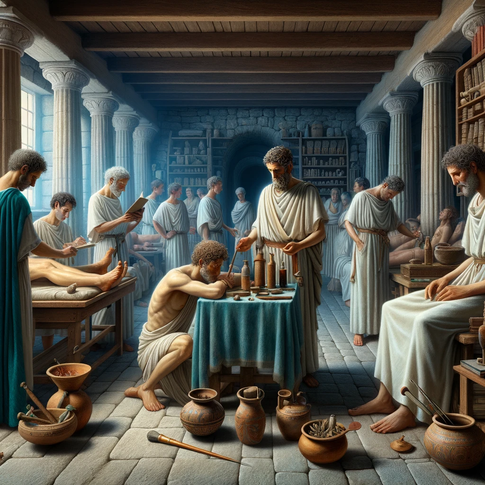

The Marvels of Roman Ingenuity: A Witness to Progress
In the heart of our magnificent Rome, the advancements in science and technology are a testament to the boundless ingenuity of our people. As I stroll through the city, I am continuously struck by the grandeur of our architectural achievements. The aqueducts, towering and steadfast, bring life-giving water from distant mountains, straight to our fountains and baths. It is a marvel how these structures, built with such precision, sustain our city's thirst. Our roads, a network of connectivity, stretch across the empire like the threads of a vast web. They are not merely paths but lifelines that bind the empire, facilitating trade and military expeditions with unprecedented efficiency. The very stones seem to whisper tales of faraway lands and conquests. In the realm of medicine, our physicians wield techniques that baffle the mind. Their knowledge of herbs and surgical practices speaks of a deep understanding of the human body, offering cures and relief to many ailments.
Even our military might owes much to technological prowess. The refinement in weaponry and armor, the construction of mighty siege engines, and the formidable organization of our legions underscore a mastery of military engineering. As I pen this, surrounded by the fruits of Roman innovation, I am filled with pride and wonder. In every corner of our city, in every facet of our lives, the spirit of progress and mastery is evident. Truly, we are living in an era of unparalleled advancement, a golden age of Roman ingenuity.